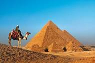
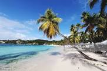
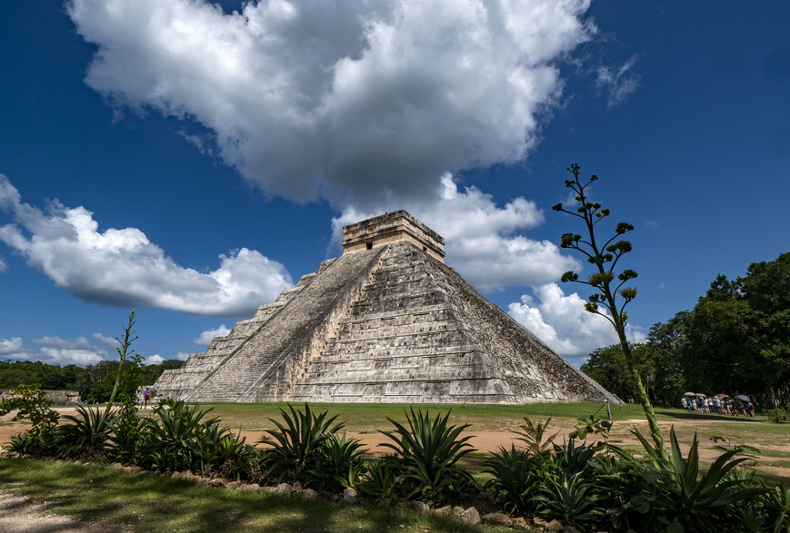

Egypte
L'Égypte est un pont entre l'Afrique du Nord-Est et le Moyen-Orient et son histoire remonte à l'époque des pharaons. Des monuments millénaires bordent les berges de la fertile vallée du Nil, notamment le sphinx et les pyramides colossales de Gizeh. La ville de Louxor abrite le temple de Karnak et ses hiéroglyphes, ainsi que les tombeaux de la vallée des rois. Le Caire, la capitale, regorge de sites ottomans, comme la mosquée Mohammed Ali ou le musée égyptien et ses trésors d'antiquités.

Guadeloupe
Territoire français d'outre-mer, la Guadeloupe est un groupe d'îles situé dans le sud de la mer des Caraïbes. Ressemblant à un papillon, ses deux plus grandes îles sont séparées par la Rivière Salée. L'île vallonnée de Grande-Terre possède de longues plages et des champs de canne à sucre. Sur l'île de Basse-Terre, le parc national de la Guadeloupe abrite les chutes du Carbet et le volcan de la Grande Soufrière. Parmi les îles de plus petite taille figurent Marie-Galante et la Désirade.

Mexique
Situé entre les États-Unis et l'Amérique centrale, le Mexique est un pays réputé pour ses plages du Pacifique et du golfe du Mexique, ainsi que pour ses paysages variés - entre montagnes, déserts et jungles. Il est pourvu de ruines anciennes comme Teotihuacan et la cité maya de Chichén Itzá ainsi que de villes datant de l'époque coloniale espagnole. Sa capitale Mexico propose un retour à la modernité avec ses boutiques haut de gamme, ses musées renommés et ses restaurants gastronomiques.